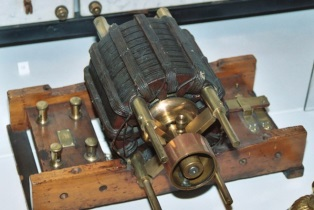
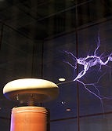

Nikola Tesla, americki naucnik srpskog porekla, najviše je doprineo nauci i tehnološkom progresu sveta kao pronalazac obrtnog magnetnog polja, indukcionog motora, polifazne naizmenicne struje, generatora i kompletnog sistema proizvodnje i distribucije elektricne energije. Po njemu je jedinica medunarodnog SI sistema dobila naziv — mera za magnetnu indukciju "tesla". Tesla je konstruisao generator struja visoke frekvencije i napona, danas poznat kao "Teslin transformator", transformator bez jezgra, Teslina zavojnica, ili Teslin kalem.
Roden je 10. jula 1856. godine u Smiljanu, (Vojna granica, tadašnja Austrija, danas Republika Hrvatska). Školovao se u Austriji i, kasnije, Austrougarskoj monarhiji. Osnovnu školu pohadao je u Smiljanu i Gospicu (1862-1866), a Realnu gimnaziju u Gospicu (1866-1870).
U periodu od 1881. do 1882. godine radi u Budimpešti
u Centralnom telegrafskom uredu. Upravo tu zapocinje svoj veliki pronalazacki period — usavršava aparat za pojacanje glasa kod telefona, a februara 1882. godine dolazi na ideju o obrtnom magnetnom polju.
Sredinom 1882. godine odlazi u Pariz, u Edisonovo Kontinentalno društvo, a 1883. godine iz Pariza prelazi u Strazbur. Tamo je napravio prvi prototip indukcionog motora. Zatim odlazi 1884. godine u Sjedinjene Americke Države i pocinje da radi u Edisonovoj kompaniji. Vec 1885. godine napušta Edisona i osniva sopstvenu kompaniju — "Tesla Arc & Light Co." Pocinje da pravi prve motore i generatore naizmenicnih polifaznih struja.

Sledecu veliku oblast njegovih istraživanja cine naizmenicne struje visokih frekvencija i njihovo dejstvo. Pred Americkim institutom elektroinženjera 20. maja 1891. godine u Njujorku Tesla drži predavanje "Eksperimenti sa naizmenicnim strujama vrlo visokih frekvencija i njihova primena u veštackom osvetljenju". Godinu dana ranije (1890) objavljuje rezultate o fiziološkom dejstvu struja visokih ucestanosti.
Tokom perioda od 1891. do 1896. godine prijavljuje patente vezane za varnicni oscilator sa rezonantnim transformatorom i Rumkorfov induktor. Na poziv Kraljevskog instituta iz Londona 1892. odlazi u London i Pariz.